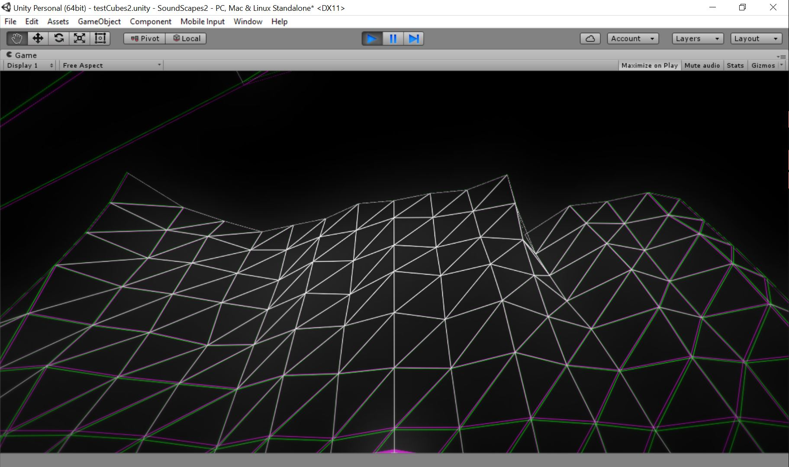
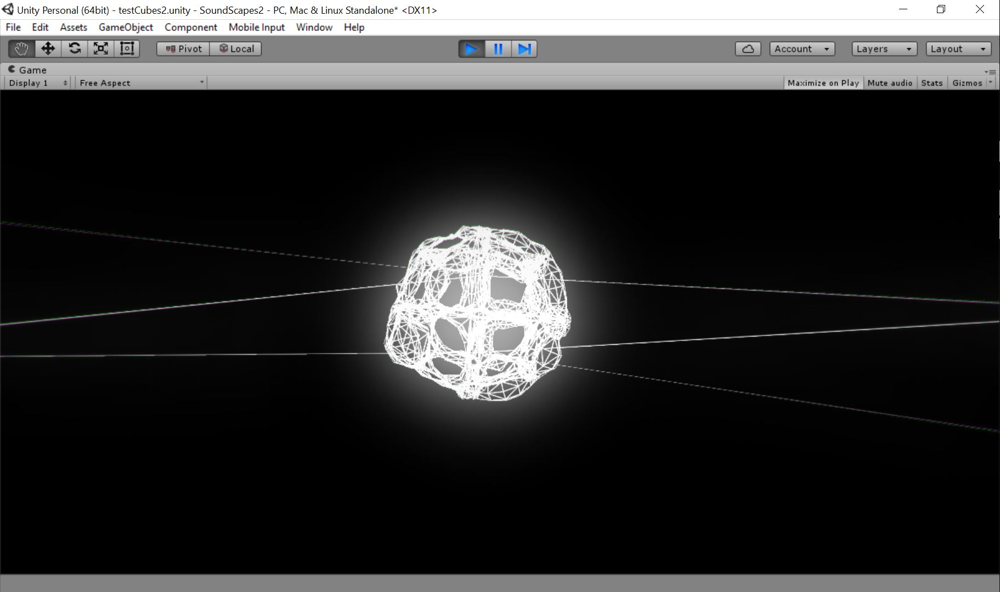
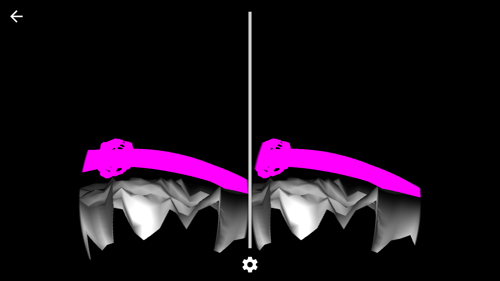
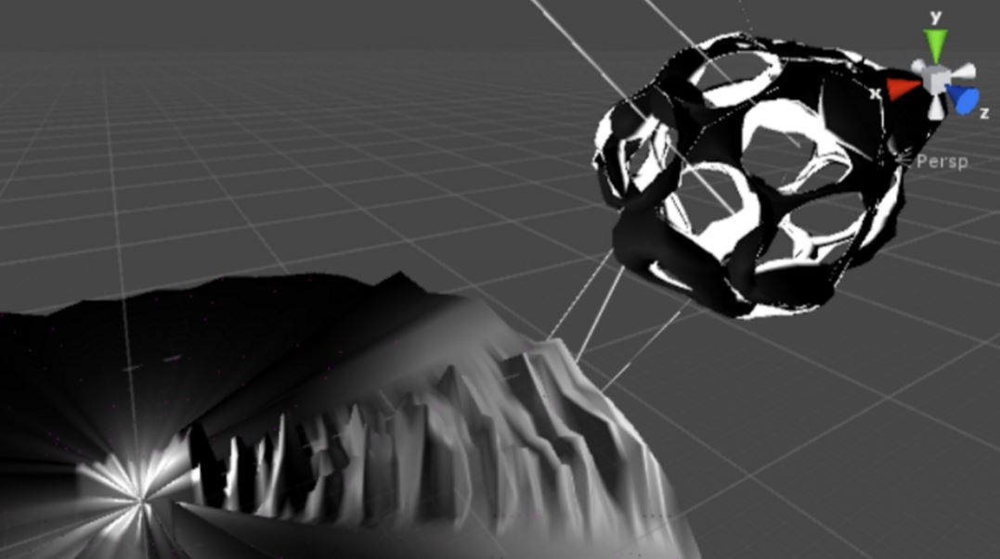
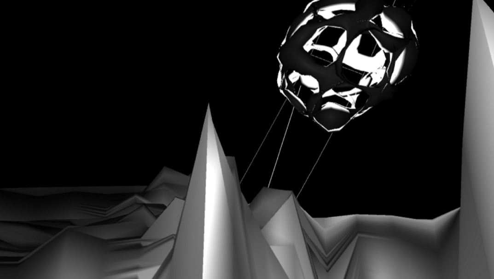

Concept
SoundScapes was a series of audio/visual experiments inspired by Buddhism, biocentrism, and indie rock.
Version II, completed in Spring 2016, was built to visualize voice and ambient noise in a virtual reality Google Cardboard app built with the Unity game engine.
Process

We created an audio-reactive mesh so that a VR user could stand in a landscape generated by their own voice
I was inspired by the words of Thich Nhat Hanh, from “The Mindfulness Bell” #52:
“The world outside is our consciousness, is us. It is not something separate and distinct.”
Michelle and I challenged ourselves to explore the relationship between the observer and the observation with our visual design and interaction choices.


Steroscopic vision made the VR experience possible

An external view of the voice-generated landscape

What the user would see inside the VR goggles
Home